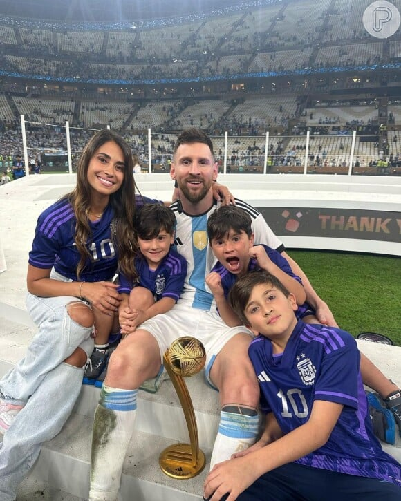
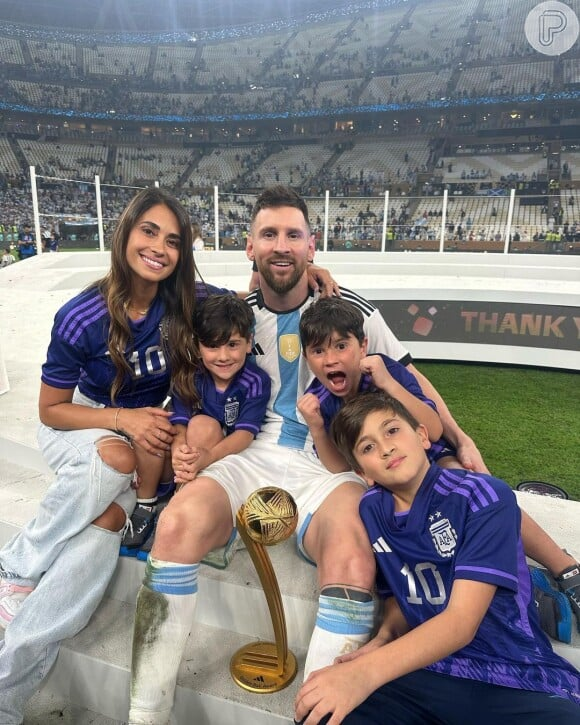
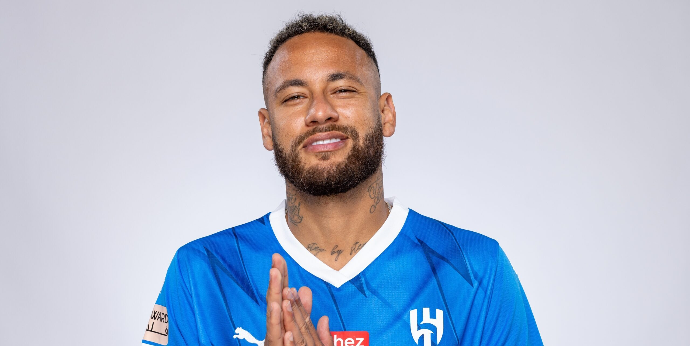
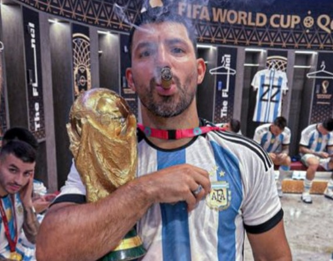
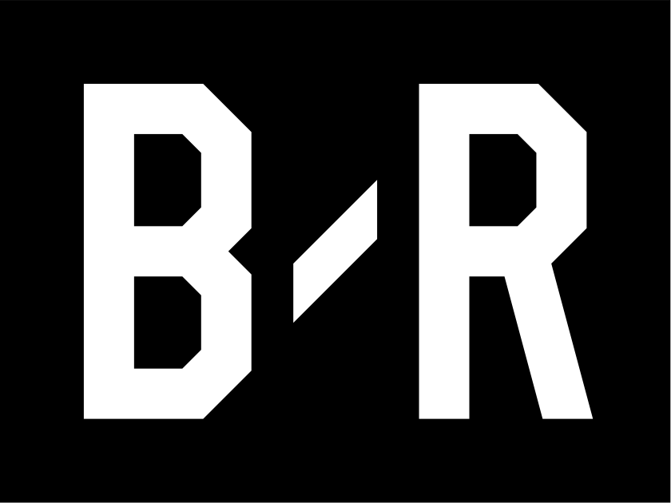

afaseleccion
Curtido por kunaguero e outras 601.525 pessoas
 

antonelaroccuzzo
angeldimariajm

neymarjr
luissuarez9
pabloaimarok

kunaguero
ronaldinho

blReport
blReport
blReport
blReport

Sobre • Ajuda • Imprensa • API • Carreiras • Privacidade • Termos • Localizações • Contas mais relevantes • Hashtags • Idioma
© 2021 INSTAGRAM DO FACEBOOK
afaseleccion
Curtido por kunaguero e outras 601.525 pessoas
fcbarcelona
Curtido por neymarjr e outras 101.456 pessoas
newells
Curtido por pabloaimarok e outras 12.924 pessoas